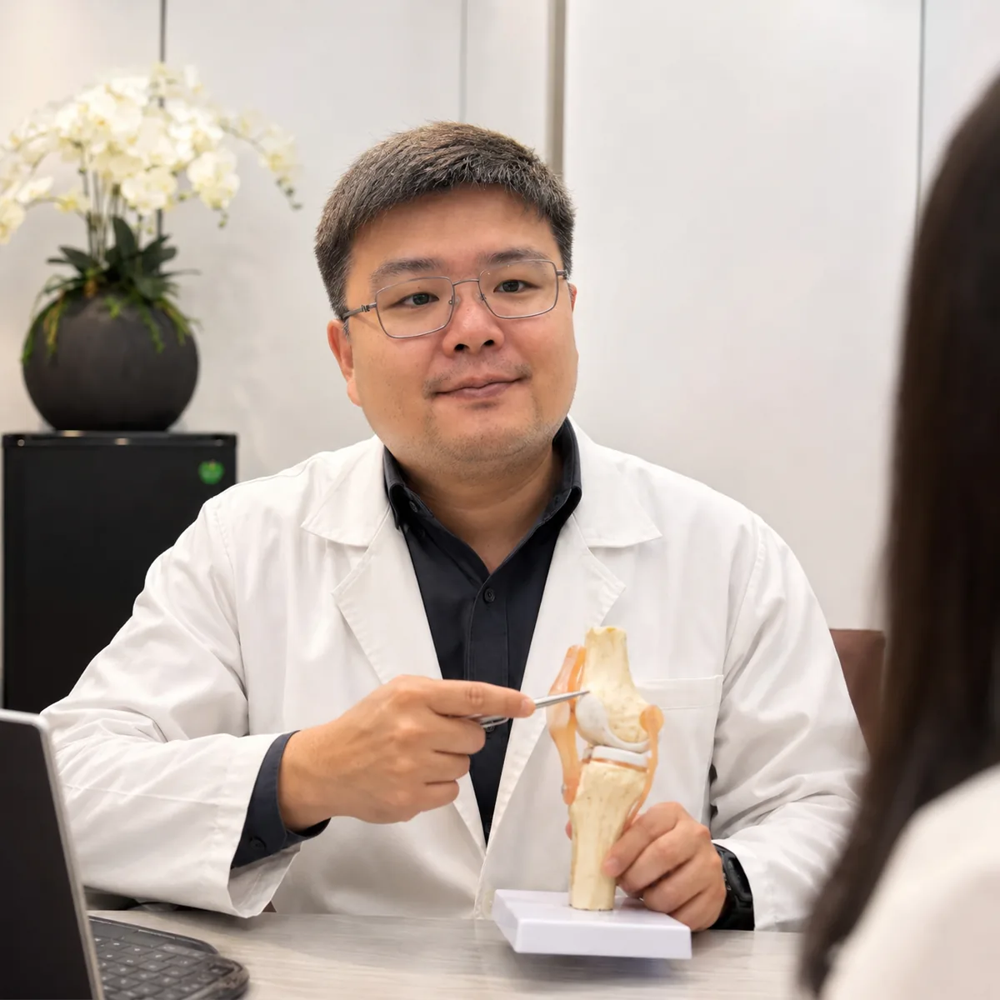
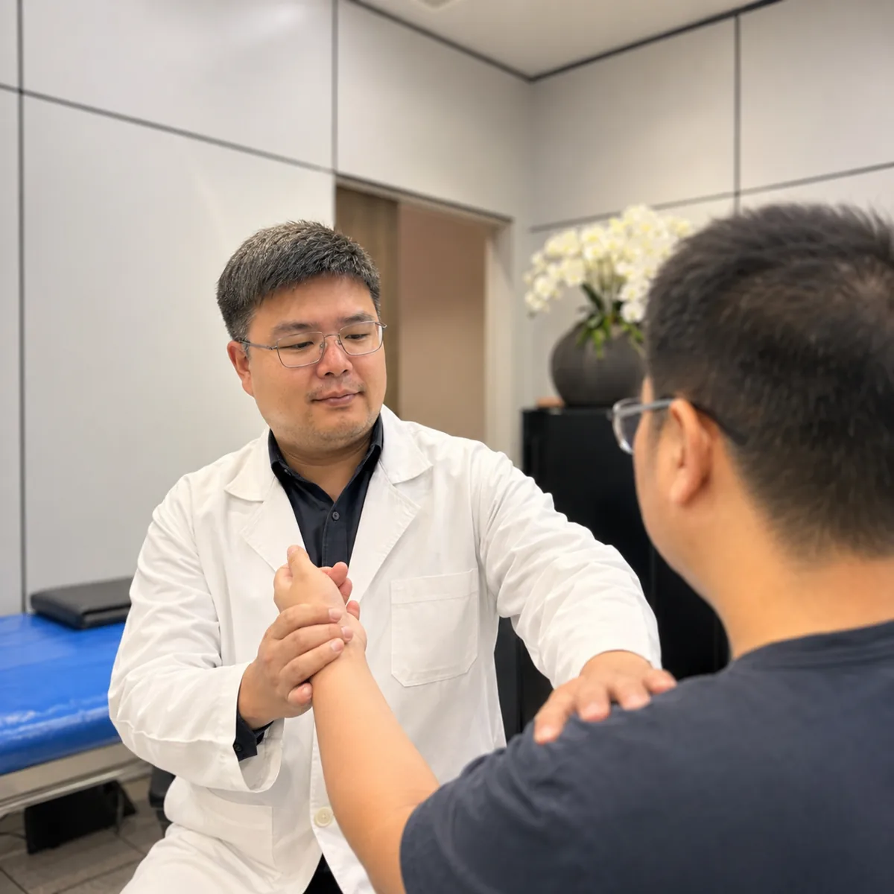
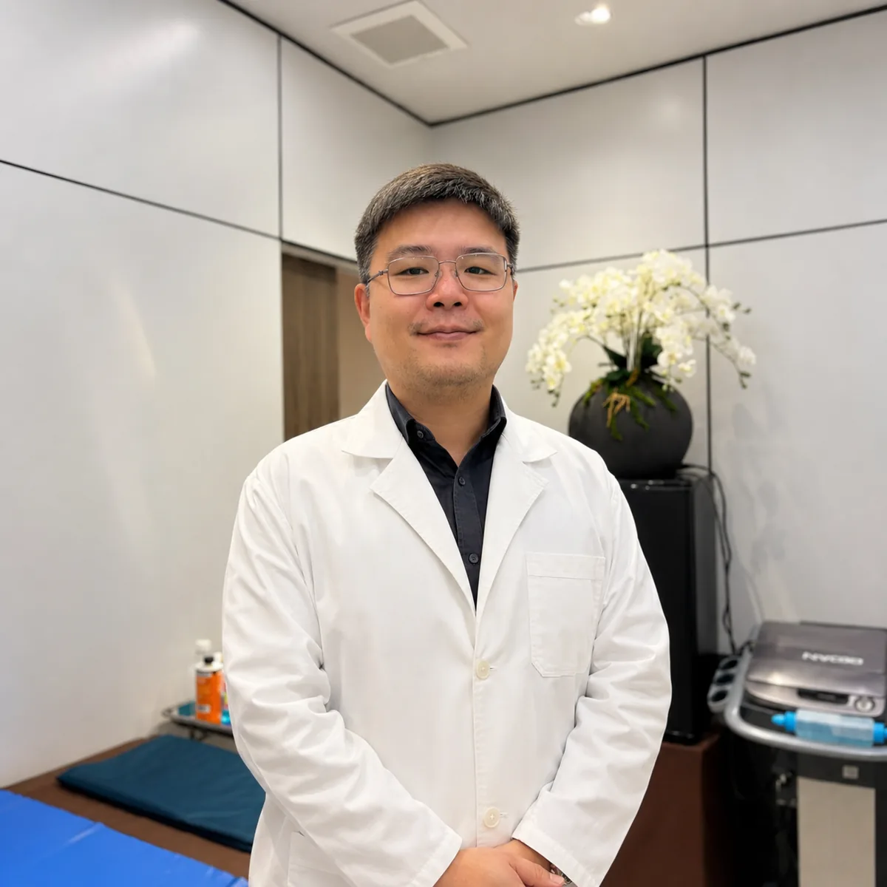

01ปวดเข่า / ข้อเข่าเสื่อม
ประเมินสาเหตุ วางแผนลดปวด ฟื้นฟูการใช้งาน และชะลอข้อเสื่อม
คลินิกกระดูกและข้อในภูเก็ต
ตรวจรักษาอาการปวดเข่า ปวดหลัง ปวดไหล่ มือชา นิ้วล็อค และข้อเสื่อม โดยแพทย์เฉพาะทางกระดูกและข้อ พร้อมอธิบายทางเลือกอย่างชัดเจน
Walk-in ได้ในเวลาเปิดทำการ


ตรวจประเมินโดยแพทย์เฉพาะทาง
คลินิกกระดูกและข้อหมอกิตติพัฐเหมาะสำหรับผู้ที่มีอาการปวดเรื้อรัง ปวดจากการใช้งาน หรือเริ่มกังวลเรื่องข้อเสื่อม โดยเน้นตรวจหาสาเหตุ อธิบายผล และวางแผนรักษาเป็นขั้นตอน
ดูแลอาการปวดและปัญหากระดูกข้อที่พบบ่อย ด้วยแนวทางที่เหมาะกับแต่ละคน
ประเมินสาเหตุ วางแผนลดปวด ฟื้นฟูการใช้งาน และชะลอข้อเสื่อม
ตรวจอาการปวดหลัง เส้นประสาทถูกกดทับ และอาการร้าวลงขา
ดูแลออฟฟิศซินโดรม ไหล่ติด เอ็นอักเสบ และปัญหาการเคลื่อนไหว
ตรวจอาการชา เจ็บนิ้ว ขยับติด และปัญหาเส้นเอ็นบริเวณมือ
ประเมินอาการบาดเจ็บจากการทำงาน ออกกำลังกาย และกีฬา
ช่วยประเมินกระดูกและข้อได้ชัดเจน เพื่อประกอบการวางแผนรักษา
แนวทางการดูแลแบบสมัยใหม่ ชัดเจน และยึดประโยชน์ของผู้ป่วยเป็นหลัก
อธิบายอาการ สาเหตุ และทางเลือกการรักษาเป็นภาษาที่เข้าใจได้
เริ่มจากแนวทางอนุรักษ์นิยมเมื่อเหมาะสม และให้ข้อมูลก่อนตัดสินใจ
พิจารณาจากอาการ ความรุนแรง ไลฟ์สไตล์ และเป้าหมายของผู้ป่วย
ประเมินและดูแลโดยแพทย์เฉพาะทางกระดูกและข้อ
ข้อมูลเบื้องต้นก่อนเข้ารับการตรวจที่คลินิก
หากปวดต่อเนื่อง เดินลำบาก มีบวม เสียวเข่า หรืออาการไม่ดีขึ้นหลังพัก ควรพบแพทย์เพื่อประเมินสาเหตุและแนวทางรักษาที่เหมาะสม
ไม่จำเป็นเสมอไป หลายรายดูแลได้ด้วยการปรับกิจกรรม กายภาพ ยา หรือหัตถการบางอย่าง การผ่าตัดจะพิจารณาเมื่อเหมาะสมจริง ๆ
อาจเกิดจากกล้ามเนื้อ หมอนรองกระดูก เส้นประสาท หรือโครงสร้างกระดูกสันหลัง แพทย์จะซักประวัติ ตรวจร่างกาย และพิจารณาการตรวจเพิ่มเติมตามความจำเป็น
การรักษาขึ้นกับสาเหตุและความรุนแรง อาจเริ่มจากยา การพักใช้งาน อุปกรณ์พยุง การฉีดยา หรือแนวทางอื่นตามการประเมิน
ควรตรวจเพื่อแยกว่าเป็นเอ็นอักเสบ ไหล่ติด หรือปัญหาอื่น การรักษามักเน้นลดปวดและฟื้นช่วงการเคลื่อนไหวอย่างค่อยเป็นค่อยไป
มีพื้นที่สำหรับเอกซเรย์ดิจิทัล ช่วยให้แพทย์ประเมินกระดูกและข้อได้สะดวกขึ้นเมื่อต้องใช้ภาพประกอบการวินิจฉัย
สามารถ walk-in เข้ารับบริการได้เลยในเวลาเปิดทำการ หรือโทรสอบถามก่อนเข้ามาได้ที่ 081-148-1780 หากมีอาการฉุกเฉินควรไปโรงพยาบาลทันที
นำประวัติยา โรคประจำตัว ผลตรวจเดิม ภาพเอกซเรย์หรือ MRI เดิม และจดอาการสำคัญ เช่น จุดที่ปวด ระยะเวลา และกิจกรรมที่ทำให้อาการแย่ลง
เหมาะสำหรับการประเมินอาการปวดข้อ ข้อเสื่อม ปวดหลัง และปัญหาการเดิน โดยเน้นอธิบายทางเลือกการรักษาอย่างชัดเจน
สามารถประเมินอาการบาดเจ็บจากการใช้งานและกีฬา เช่น ปวดเข่า ปวดไหล่ ข้อแพลง หรือเอ็นอักเสบ เพื่อวางแผนกลับไปใช้งานอย่างเหมาะสม
Walk-in ได้ในเวลาเปิดทำการ หรือโทรสอบถามก่อนเข้ามาได้ที่ 081-148-1780
Walk-in เข้ารับการตรวจได้เลย หรือโทร 081-148-1780 เพื่อสอบถามเวลาเปิดทำการและข้อมูลการเข้ารับบริการ